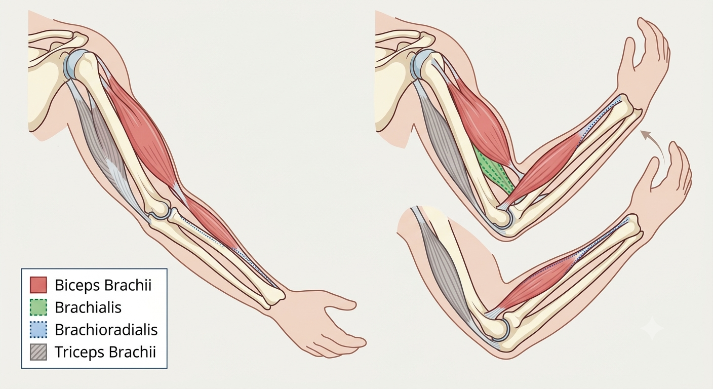
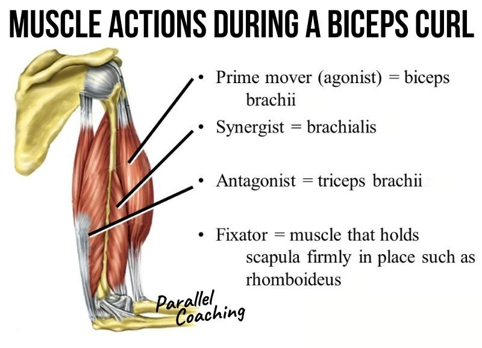

Origin & Insertion
The Insertion Moves Toward the Origin
Origin — fixed end
Insertion — movable end
At rest: the biceps brachii's origin (scapula) is fixed. Click "Contract" to see the insertion (radius, near the elbow) get pulled toward it.
Reference — Elbow Flexors & Extensor

Biceps brachii, brachialis, and brachioradialis originate above the elbow and insert on the radius/ulna — when they contract, the forearm (insertion) swings up toward the shoulder (origin). Triceps brachii inserts on the olecranon and does the opposite: it extends the elbow.
Bones as Levers
Fulcrum (F) · Effort (E) · Load (L)
1st-Class Lever: Effort and load are on opposite sides of the fulcrum. Example: nodding the head — the atlanto-occipital joint is the fulcrum, posterior neck muscles provide effort, and the weight of the face/skull is the load.
How Muscles Cooperate
Agonist · Synergist · Antagonist · Fixator
Click "Flex Elbow" to see each muscle's role during this movement.
AGONIST
Biceps brachii
SYNERGIST
Brachialis
ANTAGONIST
Triceps brachii
FIXATOR
Rhomboideus
Reference — Muscle Actions During a Biceps Curl

Prime mover (agonist) = biceps brachii. Synergist = brachialis. Antagonist = triceps brachii. Fixator = a muscle that holds the scapula firmly in place, such as the rhomboideus.
Scenario Challenge
Same Muscle, Different Role — It Depends on the Movement
Scenario 1 / 4